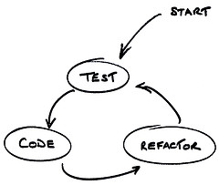
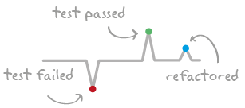

Mini code retreat
Guidelines
3 itérations de 40 minutes
itération en pair programming & TDD
10 minutes de rétrospective
on efface tout le code (oui... tout)
5 minutes pour changer de paire... et on recommence
Iteration 1
Retrospective
Est ce que votre code fonctionne à la fin de la session ?
Un choix d’implémentation particulier ?
Comment s’est passé votre pair programming ?
Comment s’est passé le TDD ? Comment cela vous a t-il aidé ?
Avez vous détecté des code smell ?
Avez vous détecté des communication smells ?
Des conseils pour les autres ?
XP - Simple Design Rules
Run all tests
Contains no duplication
Express all the idea the author wants to express
Minimize classes and methods
Iteration 2
+
Piments
Challenge

Write a failing test for your pair
He makes it pass and refactor if neeeded
Now its turn to write you a failing test
... and back to 1
Tip...

Never refactor when you are in the RED zone
Iteration 2
Let's start...
Retrospective
Iteration 3
Pick a challenge
Method size < 4
No mouse
No loop
Evrything is immutable
Overall Retrospective
What did you learn today ?
What surprised you today ?
What will you apply & use on Monday at the office ?